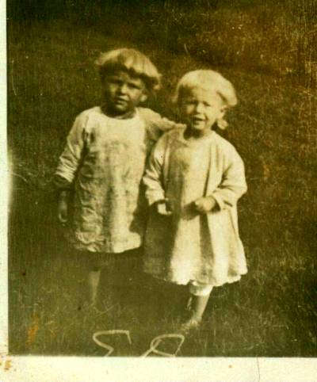
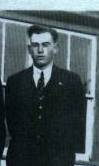
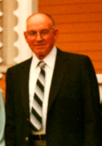

The Family Chronicle
No. 51 October 16,2003
__________
John Franklin Glendenning (December 14, 1919 – June 21, 1986)
John was born at Little Branch shortly after the family returned to Canada. He attended the Little Branch School probably for 7 or 8 years, and then he worked on the farm. Dad had not been well for a number of years so Walter and John did the farm work.

John Glendenning and Marjorie Watling - Undated
John and Walter hauled fish from Hardwicke to Chatham, cut hardwood on the “ridge” and delivered it to Loggieville and Chatham. One day they would go to Hardwicke or Baie St. Anne (including Fred Savoie’s) and bring fish back to the Branch; the next day, they delivered the fish to Chatham for $5.00 per ton (two box-sled loads). They went to the woods and cut and split a cord of hardwood and the next day delivered it to Loggieville or Chatham for $5.00 including the cost of the wood.
John worked hard and put in long hours. He expected everyone to do their bit whether it was bringing in the wood for the stove, doing barn chores, going to the woods in winter, making hay in summer, etc. It was expected and you did it. But he was also
very generous to people needing help.
In the late 1930’s John, along with some other young men from Black River including Tom Harper, Theodore Fowlie, took an agricultural course in Newcastle. The course included practical farm mechanics, agriculture, book keeping, general mechanics and woodworking. As part of the course, John made a beautiful birch desk, which he finished in walnut. I also remember that he learned a new technique for killing chickens. I believe that it was then or shortly thereafter, that John rigged up a wind generator on the roof of the barn which would charge a battery and provide light.
One winter, November I believe, he and Brydone Weeks (Brydone was home on leave, probably before he went overseas) built a tractor out of an Oakland front end (a car that belonged to Alex MacDonald) and a Godferson rear end (a truck used by the A&R Loggie Co) – and they did this in Walter’s old shed without the aid of welding and cutting equipment (or heat). The tractor had two transmissions. The tractor was very powerful but the too heavy for soft ground.
During the winter of 1945-46, and perhaps winters previous to this, John, Ken and Norm all worked in the woods for Hubert Matchett of Sunny Corner. They would be gone all week and I did the barn work.
As a young lad going on 17, I went to work on the boats in Chatham loading pulp and pit props. (I am sure that I got my first job based on the reputation of John, Ken and Norm.) One day we were storing 8-foot props down in the hold. They are heavy enough anyway but these were also moldy; I was struggling and John knew it. John said, “Let me take that one, Donald”. And it happened many times.
For a number of years John went from farm to farm along the Miramichi pressing hay, first with a horse powered hay press but later with a press operated off a tractor. (When pressing hay at home, it was my job to keep the horse moving and to prevent it from grabbing at the hay when it went past the end of the bundle.) Bundles of hay weighed between 80 to 120 pounds. John worked all around Black River, Napan, Barnaby River, Cains River, etc. For a number of

John - undated
years, John owned a 3-ton Dodge truck, which I believe he bought from Hubert Matchett, and trucked pulp, pit props, gravel, lime, fertilizer, hay and Christmas trees.
John met Mary Edna Bessie Watling when she attended a service at St. Paul’s with her cousin, Millie MacDonald. He took Mary back to Point Aux Carr that night. John and Mary were married at the Branch on January 27, 1944 and lived at the Branch for a while. John and Mary had four children, Margaret, Franklin, Jean and George.
The day of, or day before, the wedding, John went in town to do some last minute shopping. It was raining and the roads were icy. An RCMP vehicle went through a stop sign and clipped John’s truck.
In 1946-47 John and Mary built a new house on the Bob MacLean property and in the spring of 1948 opened a store in their living room. In 1968 they built a new store nearer the road and put in gas tanks. John was very entrepreneurial selling groceries, flour, feed, plumbing, furnaces and anything else to make a buck.
John received his call for military service and, I believe, went to Fredericton for a physical. He had very poor eyesight and was turned down. He probably would not have had to serve anyway, because farming was an essential service and he was needed at home. Ken and Norm were already in the Service and I was too young to take over the responsibility of farming.
When Ken and Norm were in the service, I was the only one around to help with the farm work. Since Dad died when I was very young, you might say that I learned to work under John’s direction. I recall going to the woods in the winter, sitting on the bob-sled and on the load of wood on the way home, building loads of loose hay and poisoning potato bugs early in the morning to take advantage of a heavy dew. John was the only one of the boys who would sing while driving to and from the fields or woods – I especially remember him singing familiar hymns.
Many of the older people in Black River will remember the 1939 Ford half-ton truck that, as I recall, John purchased from Bonnie Flanagan. It was a far cry from the old Model A. The truck had wooden cab on the back and John would take people to town on Saturday night when the stores were open. There could be a 10-12 people in the back. I think that he charged one dollar. The last thing before leaving town, he would drive up Water Street and past Ben’s Canteen to see if anyone needed a lift home.
John and Mary liked to visit family and friends around the Miramichi and Bathurst. John and Mary, with Margaret and Jeannie, made their first trip to Florida over Christmas of 1958. Carol and I went with them to help with the driving. Later, they managed to visit Florida for a month most winters always stopping to see family and friend in Florida and on the way. When our children were small and we visited Black River, John always had gave the kids a candy or some change just as we were about to drive away.

John taken August 25, 1983
The Chronicle is an occasional newsletter published by Don Glendenning It is generated to provide information about my extended family and Black River as I remember it. Comments, enquiries and information may be sent to 62 Queen Elizabeth Drive, Charlottetown, PEI, C1A 3A9. Tel: 902-892-5859 Email: dglende @attglobal.net. Feel free to make and pass along copies.